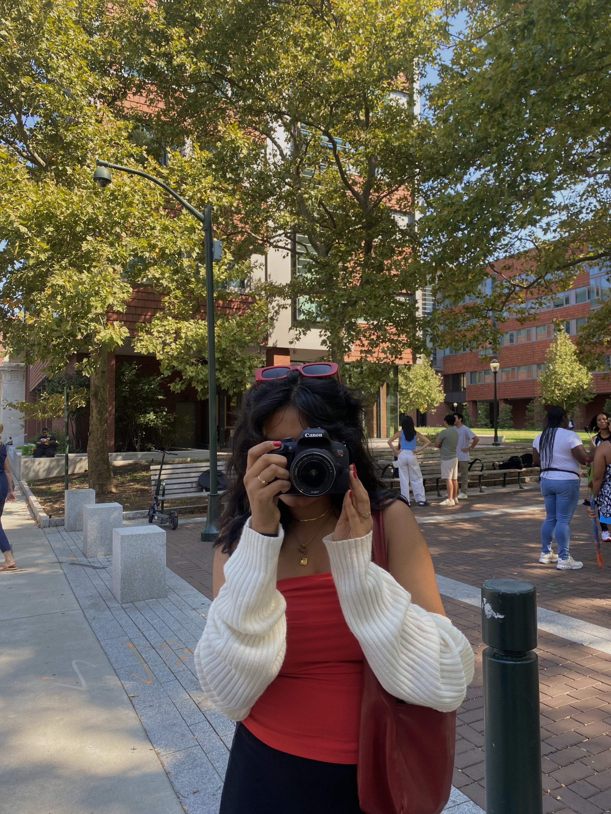

···················································································
: ______ __ __ ____ ____ _____ ______ __ __ _____ :
: | T| T Tl j| \ / ___/| T| T T/ T :
: | || l | | T | D )( \_ | || | || Y | :
: l_j l_j| _ | | | | / \__ Tl_j l_j| ~ |l__| | :
: | | | | | | | | \ / \ | | | l___, | l__j :
: | | | | | j l | . Y \ | | | | ! __ :
: l__j l__j__j|____jl__j\_j \___j l__j l____/ l__j :
: :
: ___ ___ __ __ ___ __ __ __ __ ____ ____ ______ :
: | \ / \ | T T / \ | T T | T__T T / T| \ | T :
: | \ Y Y | | |Y Y| | | | | | |Y o || _ Y| | :
: | D Y| O | | ~ || O || | | | | | || || | |l_j l_j :
: | || | l___, || || : | l ` ' !| _ || | | | | :
: | |l ! | !l !l | \ / | | || | | | | :
: l_____j \___/ l____/ \___/ \__,_j \_/\_/ l__j__jl__j__j l__j :
: :
: __ ___ _____ _____ ___ ___ _____ :
: / ] / \ | || | / _] / _]/ T :
: / / Y Y| __j| __j/ [_ / [_ | Y | :
: / / | O || l_ | l_ Y _]Y _]l__| | :
: / \_ | || _] | _]| [_ | [_ l__j :
: \ |l !| T | T | T| T __ :
: \____j \___/ l__j l__j l_____jl_____j l__j :
···················································································

Hi! I'm Shruthi and this is my website.
As a former Starbucks barista, these drinks are very yummy.
(NOT a Starbucks advertisement or endorsement.)